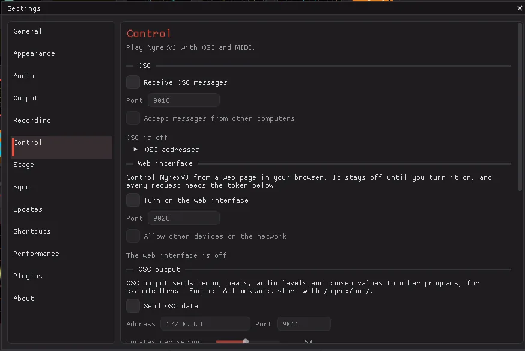

Contents
Getting started
- Welcome to NyrexVJ
- Installing and first start
- The window at a glance
- Your first show in five minutes
Playing visuals
- The clip grid
- Decks and transitions
- Layers and blending
- The Clip window
- Effects
- The Library
- Presets and sessions
- The Master window
Music and motion
Your own content
- Video and image clips
- Your own shaders
- 3D models
- The Clip Creator
- Text, particles and effect chains
- The node effect editor
- Live sources: Spout, NDI and cameras
Output and recording
Live control and shows
- Control: MIDI, OSC and the web page
- Show sync and timecode
- The show timeline
- Stage: DMX, VRSL and VRChat
- Plugins
Reference and help
Manual / Live control and shows
Control: MIDI, OSC and the web page
#Where it lives
Everything is under Settings, Control. The mappings and addresses refer to the working deck, the one you see in the clip grid.


#MIDI
MIDI works on Windows and on Linux. On Linux the controller must show up as an ALSA sequencer port, and aconnect -l lists them. Pick your controller under Device, press Add mapping, choose what it should control and then move a knob or press a key on the controller. The two are linked from that moment on.
Knobs and faders (CC) set values. Keys (notes) fire triggers or switch things on while held. Tick Invert to flip a fader, press Learn to give a row a new knob and Remove to delete it. Mappings are saved in controls.json in the data folder. A controller that another program has opened exclusively cannot be used by two programs at once.
#Feedback to the controller
Many controllers have lit pads or motor faders that can show what NyrexVJ is doing. Tick Send feedback to the controller under the MIDI device and choose the Feedback device, which is often the same name as the input but listed on its own. Refresh devices looks again after you plug one in.
NyrexVJ then answers each mapping with the same note or control change it listens to. A pad is lit (value 127) while its clip is playing on its layer, while its column has a clip playing, while its deck is the working deck, or while its switch (blackout, bypass, solo, effect on or off) is on, and dark (0) otherwise. A fader or knob mapped to a value follows that value inside its low and high range. Only changes are sent, never the same value twice, and at most 64 messages per frame.
While you are moving a knob yourself, NyrexVJ stops sending fader values until a third of a second after the last movement, so the controller does not fight your hand. Pads are not held back. If the device stops answering, the page shows the message, feedback stops and the program carries on. Feedback works on Windows. On Linux the feedback device is not yet available and the page says so.
#Controller profiles
A profile saves all your mappings under a name. Type a name next to Profile name and press Save profile. The list shows your profiles, and Load replaces the current mappings with the chosen profile. Use one profile for each controller or each kind of show, and switch before you start.
Profiles are plain files in the folder midi_profiles in the data folder, so you can copy one to another computer or send it to a friend. A file that is too large, damaged, not a profile, or written by a newer version is refused with a message and your current mappings stay as they were. Names can use letters, numbers, spaces, dots, dashes and underscores.
#OSC input
Tick Receive OSC messages. OSC is off by default and listens on port 9010, because VRChat uses 9000 and the two should not collide. Only this computer can send to it unless you tick Accept messages from other computers, which lets anyone on your network control NyrexVJ.
Send one number to an address. Floats, integers and true or false are accepted and are read as 0 to 1. A message without a value fires a trigger or flips a switch. The Settings page lists every address and a click on one copies it.
| Address | Meaning |
|---|---|
/nyrex/master/level | Master level, 0 to 1 |
/nyrex/master/blackout | Blackout, on at 0.5 and above |
/nyrex/master/bpm | Tempo, 0 to 1 maps to 40 to 240 BPM |
/nyrex/master/tap | Tap tempo |
/nyrex/master/resync | Restart the beat |
/nyrex/deck/1 to /nyrex/deck/16 | Switch to that deck |
/nyrex/deck/next | Next used deck |
/nyrex/column/1 to /nyrex/column/8 | Trigger a column |
/nyrex/layer/L/clip/C | Trigger the clip of layer L in column C |
/nyrex/layer/L/opacity | Opacity of a layer |
/nyrex/layer/L/bypass | Bypass a layer |
/nyrex/layer/L/clear | Stop the layer |
/nyrex/layer/L/fx/S/enable | Effect slot S on or off |
/nyrex/layer/L/fx/S/param/P | Parameter P of the effect in slot S |
/nyrex/macro/1 to /nyrex/macro/8 | The eight macro knobs |
Layers go from 1 to 4, effect slots from 1 to 4 and parameters from 1 to 4. The master has the same effect addresses under /nyrex/master/fx/S/. There are more addresses for colour, speed, scale and solo, the Settings page has the complete list.
#OSC output
Tick Send OSC data under OSC output. NyrexVJ then sends to 127.0.0.1 on port 9011, 60 times a second. Address, port and rate can be changed, only IPv4 addresses and localhost are accepted. All messages start with /nyrex/out/. You get the audio levels, the spectrum in 32 bands, the clock with tempo and beat position, beat and onset events and up to 16 values of your own, each following one control, for example the opacity of a layer. Programs like Unreal Engine, TouchDesigner or Max can use this to react to the show. The full table is in docs/UNREAL.md of the project.
#The web interface
Settings, Control, Web interface, tick Turn on the web interface and click Open web interface. NyrexVJ starts a small web server on 127.0.0.1 port 9020 and opens a page in your browser. The page shows the status and controls the master level, blackout, tap tempo, the 16 decks, the column triggers, the clip grid of all four layers with opacity, bypass, solo and clear, the factory looks and your own looks, and the outputs.
It is off until you turn it on, and only this computer can reach it. If you tick Allow other devices on the network, any device that knows the token can control NyrexVJ, over a connection that is not encrypted, so do it only in a network you trust. That is how you use a phone as a remote.
Every request needs the token. It is shown on the Settings page and kept in a file of its own. Copy token copies it, and New token replaces it and signs out every open page. Do not show the token on a stream. The same server offers a documented REST API under /api/v1/ for scripts, described in docs/API.md of the project.
Found a mistake or something missing? Tell us on GitHub. The same manual is built into the program, so you have it without internet. Open it with F1 or from the Help menu, then User manual.